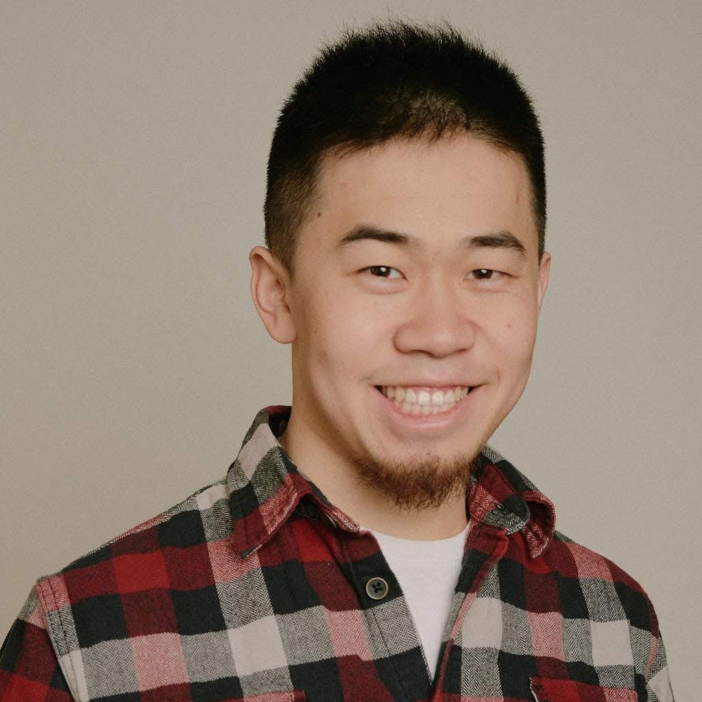

Agentic modeling for scientific questions
We study AI-agent methods that reconstruct, generate, or refine 3D structures and time-varying 3D models for scientific inference, physical simulation, or function-driven design, evaluated beyond visual appearance.
Scientific simulation and design require 3D/4D models whose geometry, motion, and physical properties support reliable predictions. The third 3D4S workshop explores AI agents that reconstruct, generate, and refine these models through measurement, geometric verification, and numerical simulation. We bring together computer vision, graphics, scientific computing, and domain science to study tool orchestration, uncertainty, physical validity, and evaluation beyond visual appearance. Through invited talks, contributed papers, posters, and a structured discussion, participants will develop shared evaluation criteria and reproducible workflows for agentic modeling in engineering, environmental science, biomedicine, and materials research.
What do we mean by agentic? An agent selects or revises modeling actions using observations, tool outputs, or feedback. We welcome tool-using language and vision-language agents, learned controllers, and human-agent collaboration. 4D means time-varying 3D, including geometry, motion, and physical properties.
The scientific question comes first: a force, flux, deformation, material property, or functional constraint. The goal is to understand when adaptive modeling produces reliable scientific evidence and when it fails.
Building on WACV 2024 and CVPR 2026, our third edition connects reconstruction and generation to agent-directed scientific workflows. CVPR 2026 brought together 150 attendees and received 21 paper submissions.
Topics and open questions
- Measurement-grounded reconstruction. Agents that combine images, depth, LiDAR, tomography, and trajectories to recover 3D geometry, motion, and physical properties, and choose additional observations when evidence is insufficient.
- Geometry for numerical simulation. Mesh and CAD repair, implicit-to-mesh conversion, unit and coordinate checks, boundary preservation, discretization, and reliable interfaces between visual models and solvers.
- Function-driven generation and inverse design. Geometry revised using aerodynamic, structural, transport, fabrication, or material objectives, with explicit constraints and comparisons across simulation fidelities.
- Dynamic modeling and physical identification. Time-varying shape, deformable objects, interactions, constitutive parameters, and boundary conditions, tested on unseen observations or physical behavior.
- Scientific tool use and collaboration. Adaptive tool selection, solver feedback, execution recovery, provenance, specialist agents, and human review, compared with fixed workflows using matched resources.
- Evaluation, uncertainty, and reproducibility. Independent validation, uncertainty propagation, negative results, held-out conditions, and scientific progress measured against compute and human effort.
Applications include engineering design, fluid and solid mechanics, environmental and geospatial science, biomedical modeling, scientific instruments, and molecular or crystal structures when geometry or dynamics is central to the task. Contributions may study one part of the modeling loop if they make the scientific objective explicit. Purely appearance-driven generation and generic agents without a substantive 3D/4D modeling connection fall outside the core scope.
What counts as scientific evidence?
| Evidence | What it supports |
|---|---|
| Appearance agreement | Consistency with observed images or visual specifications. |
| Geometric validity | Dimensions, topology, contact, assembly, and mesh requirements. |
| Numerical physical validity | Behavior under stated equations, materials, boundary conditions, and solver checks. |
| Independent validation | Agreement with held-out measurements, experiments, or downstream physical outcomes. |
A successful rendering, executable model, or stable simulation does not by itself establish predictive accuracy. We encourage comparisons with fixed workflows under matched tools and budgets, uncertainty and sensitivity analysis, and reporting of failed attempts and human intervention.
Our evaluation clinic will refine a reporting checklist around the scientific objective, agent actions, geometry checks, solver validity, independent evidence, and total resources. We aim to share the checklist and discussion synthesis within four weeks of the workshop.
Research motivating the theme
These papers illustrate emerging directions, including preprints. They are background reading, not a list of invited speakers or required citations.
- CFDagent: A Language-Guided, Zero-Shot Multi-Agent System for Complex Flow Simulation (2025; arXiv preprint arXiv:2507.23693). Geometry generation and meshing connected to a flow solver; quantitative validation on canonical sphere flows.
- CFDAgent with a general kinematics module: driving biological flapping flight simulation (2026; Theoretical and Applied Mechanics Letters). Agent-orchestrated moving-boundary CFD connects geometry and motion to aerodynamic quantities.
- Physics-in-the-Loop: A Hybrid Agentic Architecture for Validated CAD Engineering Design (2026; IJCAI 2026). Iterative CAD design with explicit engineering feedback motivates function-driven geometric generation.
- Self-Improving CAD Generation Agents with Finite Element Analysis as Feedback (2026; arXiv preprint arXiv:2605.17448). A benchmark separates plausible CAD from assembled designs satisfying geometric and structural requirements.
- Agentic Real2Sim: Physics-based World Modeling with Vision-Language Agents (2026; arXiv preprint arXiv:2607.19190). Real recordings become physical simulation episodes with downstream policy evaluation; applicability must be assessed per task.
- PiMiX 2.0: AI-enhanced Data Fusion for Radiographic Imaging and Tomography (2026; arXiv preprint arXiv:2606.19670). A framework connecting measurements, time-resolved reconstruction, and agentic analysis; an agenda for scientific 4D modeling.
- GRACE: an Agentic AI for Particle Physics Experiment Design and Simulation (2026; arXiv preprint arXiv:2602.15039). Detector geometry and configuration are revised against simulation objectives; conclusions depend on the physical model.
- A collaborative agent with two lightweight synergistic models for autonomous crystal materials research (2026; arXiv preprint arXiv:2604.11540). Crystal structure generation appears within an agent-directed materials workflow; computational candidates require separate experimental validation.
Speakers
To be announced. Invitations have not yet been sent. Confirmed or tentatively confirmed speakers will be listed here with their participation status.
Call for papers
Submissions are not yet open. We plan a non-archival workshop with peer-reviewed papers, contributed talks, and posters. Accepted papers will be shared through OpenReview under the announced submission terms and will not appear in IEEE/CVF proceedings.
We welcome methods, systems, applications, benchmarks, and negative results with a clear scientific 3D/4D modeling objective. Submission formatting will follow the applicable CVPR 2027 instructions.
Tentative important dates
All deadlines are at 23:59 Anywhere on Earth (AoE). Paper dates are proposed and will be confirmed when the CFP opens.
- Abstract registration: February 15, 2027
- Paper submission: February 19, 2027
- Author notification: March 22, 2027
- Final non-archival versions: April 23, 2027
- Workshop: June 20 or 21, 2027 (assigned by CVPR)
Preliminary workshop schedule
Proposed 4.5-hour, in-person program. This is an illustrative morning block in Seattle local time; CVPR will assign the day and session. Invited slots do not indicate confirmed speakers.
| Seattle local time | Session |
|---|---|
| 08:30 - 08:40 | Opening and scientific evaluation agenda |
| 08:40 - 09:10 | Invited slot 1: measurement-grounded 3D/4D reconstruction |
| 09:10 - 09:40 | Invited slot 2: simulation-driven geometric design |
| 09:40 - 10:10 | Three contributed talks |
| 10:10 - 10:55 | Poster session and coffee break |
| 10:55 - 11:25 | Invited slot 3: independent validation and domain science |
| 11:25 - 11:55 | Three contributed talks |
| 11:55 - 12:30 | Moderated discussion: when does an agent improve scientific modeling? |
| 12:30 - 12:50 | Small-group evaluation clinic |
| 12:50 - 13:00 | Group reports and closing |
Invited slots include questions; each contributed talk lasts 10 minutes including questions. All accepted papers will be offered a poster slot. The discussion and small-group clinic will examine concrete failure cases and independent validation tests.
Organizers



Peter Yichen Chen
Assistant Professor, University of British Columbia
Physical simulation and agentic modeling


Michael Mahoney
UC Berkeley; ICSI; Lawrence Berkeley National Laboratory
Secondary contact: mmahoney@stat.berkeley.edu
Participation and responsible scientific modeling
We welcome researchers across disciplines and career stages, including students and newcomers to scientific computing. Posters, written audience questions, and small-group discussion provide multiple ways to participate.
Contributions should document data rights, physical assumptions, uncertainty, and failure cases. Generated measurements must be labeled, and computational predictions must be distinguished from experimental evidence. We encourage reproducible workflows and appropriate human review of consequential scientific or engineering decisions.
The workshop is planned in person. Everyone, including speakers, must register in advance. Talks will be recorded through CVPR's provided Zoom room under conference procedures and speaker permissions. Remote access and recordings will follow CVPR arrangements; Zoom links will be available only through the CVPR virtual site.
Student travel support and sponsorship are not yet confirmed. Contact 3d4sworkshop@gmail.com about participation or support.
Conference logistics follow the CVPR 2027 workshop requirements.